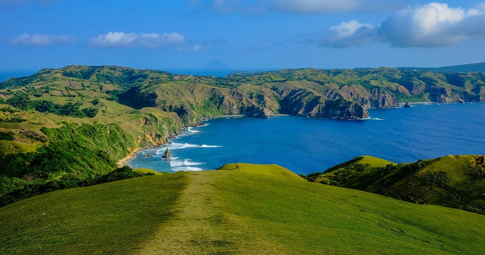

Beautiful Places in the
PHILIPPINES
Baguio CIty
Baguio, to many, is best known as
the "Summer Capital of the
Philippines", with its cool climate
making this a spot to escape the
chaotic scenes in Manila. The city
is also home to tropical pine forests,
lending the city the nickname "City of Pines".
Batanes
Batanes is an archipelagic province in the Philippines, administratively part of the Cagayan Valley region. It is the northernmost province in the country, and also the smallest, both in population and land area.

Coron Palawan
Coron, officially the Municipality of Coron, is a 1st class municipality in the province of Palawan, Philippines. According to the 2015 census, it has a population of 51,803 people.The island is part of the larger municipality of the same name.
Calaguas
The Calaguas Islands are located in the Municipality of Vinzons, in the Province of Camarines Norte. It is known for its pristine beaches—the most popular among these is the Mahabang Buhangin beach, which is made up of a long stretch of powdery white sand.
Bohol
Bohol is a province of the Philippines, in the country’s Central Visayas region. It comprises Bohol Island and numerous smaller surrounding islands. Bohol is famous for its Chocolate Hills; its tarsiers, which may be the world's smallest primate.

Tagaytay
Tagaytay is a popular holiday town south of Manila on the Philippine island Luzon. Known for its mild climate, it sits on a ridge above Taal Volcano Island, an active volcano surrounded by Taal Lake. The province of tagaytay is Cavite.
Siargao
Siargao is a tear-drop shaped island in the Philippine Sea situated 196 kilometers southeast of Tacloban. It has a land area of approximately 437 square kilometres. The east coast is relatively straight with one deep inlet, Port Pilar.
Ifugao
Ifugao is a landlocked province of the Philippines in the Cordillera Administrative Region in Luzon. Its capital is Lagawe and it borders Benguet to the west, Mountain Province to the north, Isabela to the east, and Nueva Vizcaya to the south.